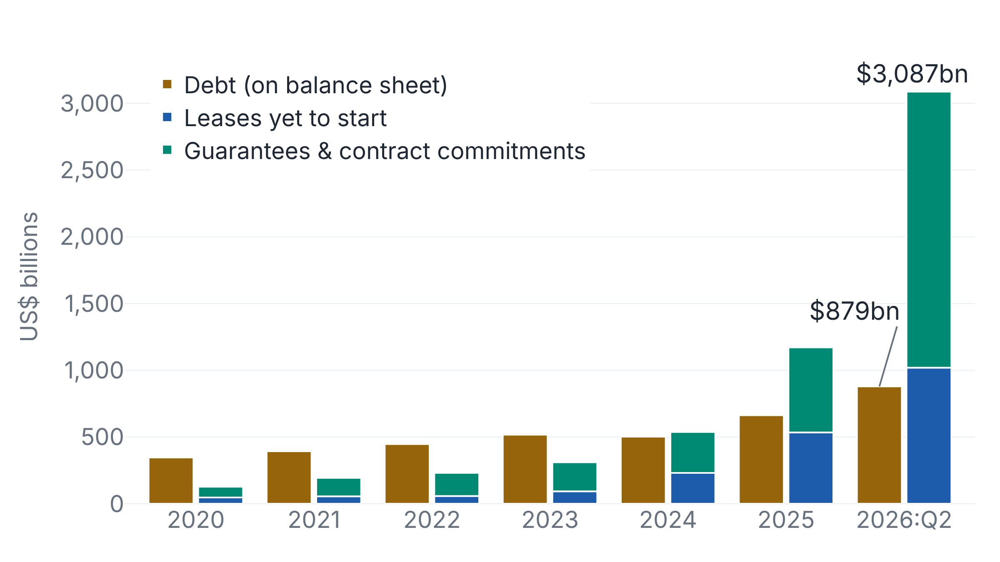
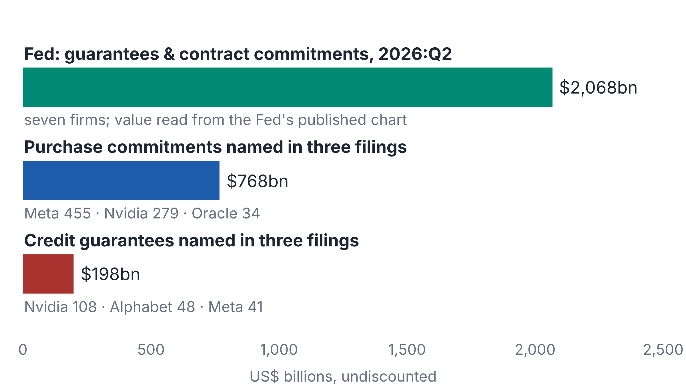

Supplier orders outweigh credit guarantees nearly four to one in four AI firms' filings
The Federal Reserve's count of seven AI firms' undiscounted leases and contracts, about 3.5 times their debt, does not separate guarantees to lenders from orders to suppliers.
Debt is the smaller part of seven AI firms' obligations
Borrowing for advanced computing reached more than $680 billion from January to October 2026, about 31 percent of investment-grade nonfinancial corporate debt issuance, the Federal Reserve's Financial Stability Report of 13 November says.1 On its chart, seven firms' leases yet to start, guarantees and contract commitments came to about $3.1 trillion at mid-2026, roughly 3.5 times their debt.1 Four of the firms' 10-Qs itemize about $198 billion of guarantees, which pay lenders or landlords, and $768 billion of orders, which pay suppliers.
Commitments passed debt in 2024 and reached 3.5 times it by mid-2026
The Fed's chart has three series (Fig. 1). Debt sits on the balance sheet. A lease yet to start, "not yet commenced" in the filings, is signed but has not begun, and it stays off the balance sheet until it does.2 The third bar, guarantees and contract commitments, covers what the Fed calls "take-or-pay contracts and residual value guarantees".1 A take-or-pay contract obliges the buyer to pay for the contracted volume whether or not it takes delivery.

The commitments passed debt in 2024 and grew from $1.2 trillion in 2025 to $3.1 trillion at 2026:Q2. The Fed prints no ratio, and calls its undiscounted commitments "not directly comparable" with discounted debt.1 Leases that run up to 30 years at Meta and 15 to 19 years at Oracle are worth less today than their face amount.32
The debt bar is uncertain too. It reads about $879 billion, but Governor Michael Barr said three days after the report that the seven largest AI firms' debt "is expected to exceed $800 billion before year's end".4 The report does not define its bar. On Barr's figure the multiple would be larger.
The filings itemize purchase orders ahead of guarantees
A credit guarantee pays a lender or landlord when someone else fails. Nvidia guarantees up to $105 billion of leases that an OpenAI affiliate is taking at an Ohio campus, plus $3.5 billion of others.5 Alphabet backstops third parties' data-center lease and energy payments with credit derivatives of $48.0 billion notional.6 Meta's residual value guarantees, which pay the shortfall if Meta leaves a leased campus worth less than an agreed threshold, reach $41.5 billion.3
A purchase commitment pays a supplier. Meta has $454.5 billion of them, mostly cloud capacity, servers and energy, and Nvidia has $279 billion, up from $119 billion a quarter earlier.35 Oracle lists $34.2 billion.2

The guarantees named here are about a fifth of what these filings itemize. The other $1.1 trillion, which includes anything Amazon, Broadcom and Microsoft owe, could be either kind, and the Fed does not say whether it nets commitments between firms in its set.
Leases reach lenders through special-purpose entities
A hyperscaler signs a long-term lease with a developer, which uses it "to secure financing for the data center's construction", often through special-purpose entities that issue senior and subordinated debt. The subordinated debt and equity go to high-yield bond funds, life insurers, business development companies and other private debt vehicles.1 Banks lend "typically senior in the capital structure and often secured", the Office of the Comptroller of the Currency says.7
One of Meta's guarantees covers its Louisiana campus. Meta owns 20 percent of the venture building it, at an estimated cost of about $27 billion, and will lease it from 2029 on four-year terms renewable to 20 years. If Meta leaves after four years, the guarantee pays the venture any shortfall in the campus's value. Meta records no liability for it, judging payment "not probable".3
The Fed sizes one link: the largest bank holding companies' "close to $1 trillion of exposure", which also covers large technology firms, private credit vehicles and utilities.1 It gives no figure for special-purpose debt or for insurers' share of the subordinated tranches.
Of three tenants, only Oracle outspends its operating cash flow
The Fed says the largest firms "may absorb losses in the event of a future downturn, mitigating their effects on the rest of the financial system", though their exposure "may be substantially larger" than their balance sheets show.1 Barr is "less concerned about direct losses" given "the still-limited amount of debt backing the current boom".4 Meta, Microsoft and Oracle each expect cash, operating cash flow and access to financing to cover their commitments "for the foreseeable future".382
| Firm, period | Operating cash flow | Capex | Leases yet to start |
|---|---|---|---|
| Meta Jan–Sep |
96.9 | 85.8 | 355.7 |
| Microsoft Jul–Sep |
58.0 | 39.4 | 364.6 |
| Oracle Jun–Aug |
23.1 | 28.5 | 288 |
Oracle's capex exceeded its operating cash flow by $5.4 billion in the quarter, even with $11.4 billion of customer prepayments counted in that cash flow, and it sold $19.9 billion of shares.2
Oracle's $288 billion of leases yet to start, beginning by fiscal 2029 on 15- to 19-year terms, are owed by the one firm in the table that already relies on outside money to keep building.2
Sources
- Federal Reserve Board · Financial Stability Report, November 2026
- Oracle · Form 10-Q, 31 Aug 2026
- Meta Platforms · Form 10-Q, 30 Sep 2026
- Michael S. Barr · Some Potential Financial Stability Implications of Artificial Intelligence, 16 November 2026
- Nvidia · Form 10-Q, 26 Jul 2026
- Alphabet · Form 10-Q, 30 Sep 2026
- OCC · Semiannual Risk Perspective, Fall 2026
- Microsoft · Form 10-Q, 30 Sep 2026